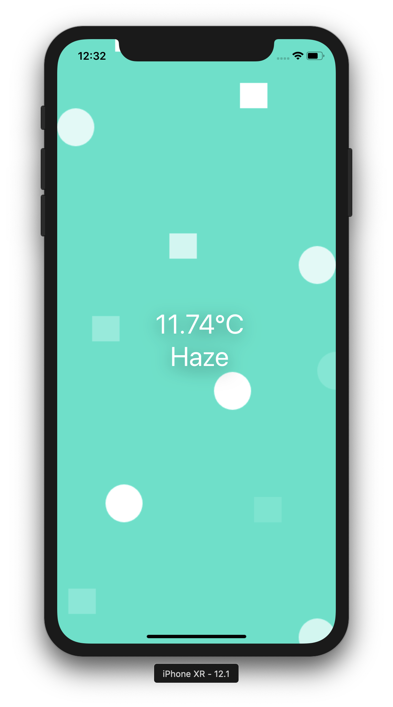
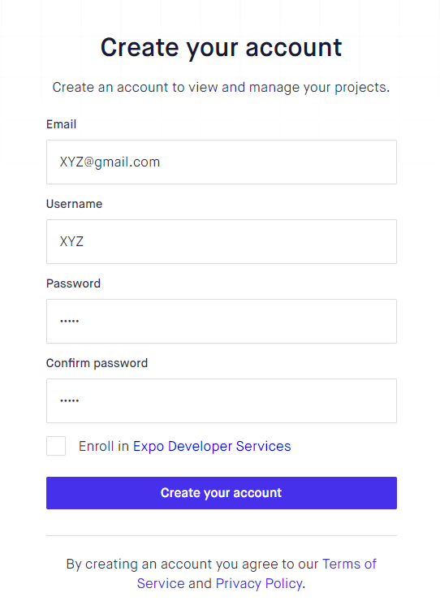
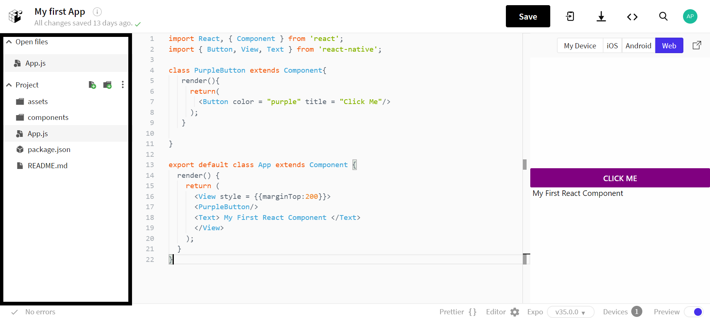
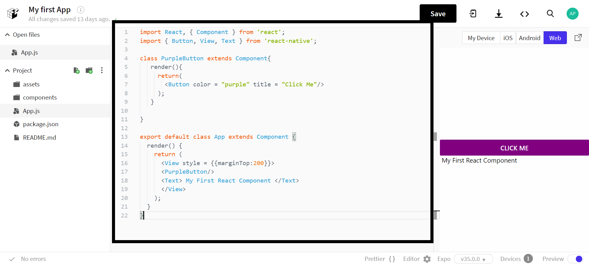
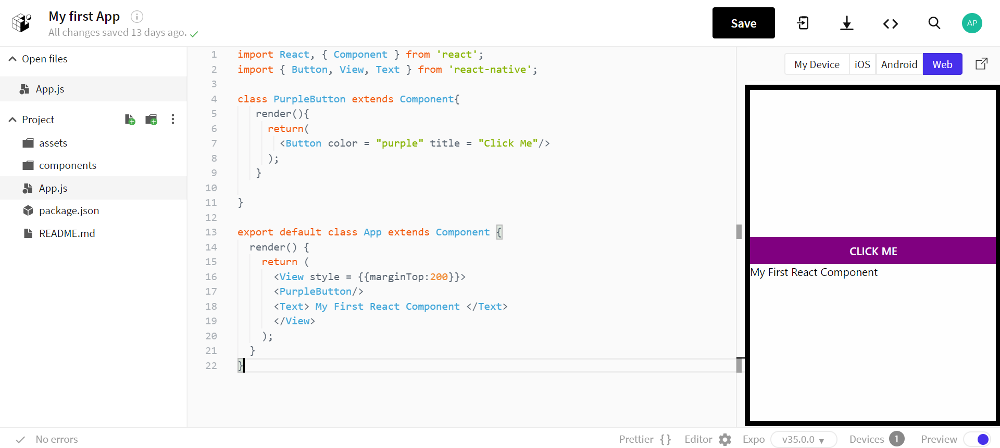
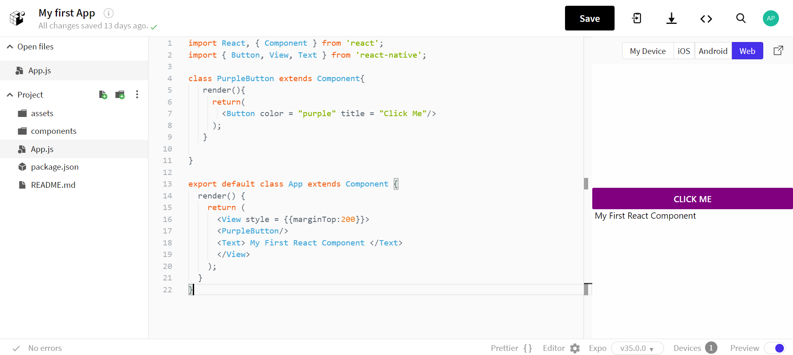

React.Js
Introduction
To start with this Computer Language i.e. Jsx, you will have to know what
exactly it is made from and for.
we'll start with difference between CSS-HTML and JavaScript. The basic difference
between these two languages is that CSS-HTML is a declarative markup language,
while on the other hand, JavaScript is imperative. To make it easy, just
keep in mind that CSS-HTML knows what to do,and you just have say how to do it.
And for Javascript, you have to tell it exactly what it has to do.
But sometimes, it's a chaos with working many different types of languages.
So, to make it up to it React has been made by FaceBook, which is the combination of all
these Languages.
 React is a declarative, efficient, and flexible JavaScript library for building
user interfaces. React.JS is an open-source, component-based front end library
responsible only for the view layer of the application.React uses a declarative
paradigm that makes it easier to reason about your
application and aims to be both efficient and flexible. It designs simple views
for each state in your application. The declarative view makes your
code more predictable and easier to debug.
React is a declarative, efficient, and flexible JavaScript library for building
user interfaces. React.JS is an open-source, component-based front end library
responsible only for the view layer of the application.React uses a declarative
paradigm that makes it easier to reason about your
application and aims to be both efficient and flexible. It designs simple views
for each state in your application. The declarative view makes your
code more predictable and easier to debug.
A react application is made of multiple components, each responsible for
rendering a small, reusable piece of HTML. Components can be nested within
other components to allow complex applications to be built out of simple building
blocks.
While building client-side apps, a team at Facebook developers realized
that the DOM is slow (The Document Object Model (DOM) is an application programming
interface (API) for HTML and XML documents. It defines the logical structure of
documents and the way a document is accessed and manipulated).
So, to make it faster,
React implements a virtual DOM that is basically a DOM tree representation in Javascript.
So when it needs to read or write to the DOM, it will use the virtual representation of
it. Then the virtual DOM will try to find the most efficient way to update the browser’s DOM.
Installations
I would prefer to work with Expo app as thats the one i'm comfortable with .
There are two tools that you need to develop apps with Expo: a local development tool and
a mobile client to open your app.
1. Local development tool: Expo CLI
'Snack' is an online editor written by Expo, which allows us to write and compile React
Native code in an online environment. We can also preview the output of the code using
Snack.
2. Mobile app: Expo client for iOS and Android

Expo client is the tool you will use to run your projects while you're developing them.
When you serve your project with Expo CLI, it generates a development URL that you can open
in Expo client to preview your app.
Start Up..
Sign up to start your first Snack project!

On the left side, you see all the files in the project.

At the centre, you see the workspace where we will write our code.

On the right side, you can see the output of your code.

You can check the output on the same PC by Clicking 'Run', or else you can install the
Android/iOS app: Expo Client, sign in with the same account and open the
project from under Projects Tab.
For Android, you can also scan the QR Code
Understanding Code..
Before Starting, just keep in mind that HTML tags start with lowercase
letters, React native components start with uppercase.
So now, refer to the code given below:

A Component is a baseclass and all React components are inherited from this baseclass
Component.
Component class is defined in the React library. You can see how React and Component
library is imported from the React library in line 1.
And in line 2, you may see how components Text,Button and View from React Native Library
has been imported.
Even in line 13, App is React Native Component and everything you want to display on the
screen must inside it.
You may have seen that all the functions in a class are written inside 'render()'.
It's because whatever is there inside render() function, that only can be displayed when returned.
For example, in line 18, 'Text' is being displayed when it is returned.
You may also find that most of the code is in JS exept inside rende() funtion.The code
inside render() function is JSX, which is the combination of all the three languages (CSS,HTML,JS).
When we are rendering components using JSX tags Text (for instance), we can write/execute
Javascript inside the {}. JSX seems to look mostly like the Other Coding languages. For example :
we write marginTop (Camel Case) in JSX that too inside {{...}}, instead of writing margin-top in CSS. the one {}
is for JS, while the other one is for JSX.
Now lets come to the classes. The Default Class (line 13) also consists of ‘View Component’ tag. ‘View Component’
is just like div in HTML. As you know render() function can display a function at a time, ‘View Component’
can come handy here. ‘View Component’ can consist of en-number of functions in it as it is an empty container.
Button has a property called ‘title’ which can be used to display text inside the button.
Unfortunately, the button does not have a style property defined on it.
Instead, we will use ‘View Component’ and place Button inside it.
We can then adjust the style of ‘View Component’.
Anishka G.